Gráficos con R
1. Introducción
1.1. Base y grid
- En
Rexisten dos formas de generar gráficos:- Base graphics
- Grid graphics
- Los gráficos base sólo producen un resultado gráfico, pero no un objeto.
- Los gráficos
gridgeneran un resultado gráfico y un objeto. - Dentro del conjunto
gridexisten dos grandes paquetes:latticeyggplot2.
1.2. Gráficos lattice
- Implementación de los gráficos trellis, The Elements of Graphing Data de Cleveland)
- Estructura matricial de paneles definida a través de una fórmula.
library(lattice)
xyplot(wt ~ mpg | am, data = mtcars, groups = cyl)
- Documentación: Código y Figuras del libro
1.3. Gráficos ggplot2
- Implementación de The Grammar of Graphics de Wilkinson.
- Combinación de funciones que proporcionan los componentes (capas) del gráfico.
library(ggplot2)
ggplot(mtcars, aes(mpg, wt)) +
geom_point(aes(colour=factor(cyl))) +
facet_grid(. ~ am)
2. Datos de ejemplo
2.1. Leemos desde el archivo local
aranjuez <- read.csv('data/aranjuez.csv') summary(aranjuez)
2.2. Añadimos algunas columnas
aranjuez$date <- as.Date(aranjuez$X)
aranjuez$month <- as.numeric( format(aranjuez$date, '%m')) aranjuez$year <- as.numeric( format(aranjuez$date, '%Y')) aranjuez$day <- as.numeric( format(aranjuez$date, '%j')) aranjuez$quarter <- quarters(aranjuez$date)
3. Catálogo de gráficos
3.1. Gráfico de dispersión de puntos
xyplot(Radiation ~ TempAvg, data=aranjuez)
ggplot(aranjuez, aes(TempAvg, Radiation)) +
geom_point()
3.2.
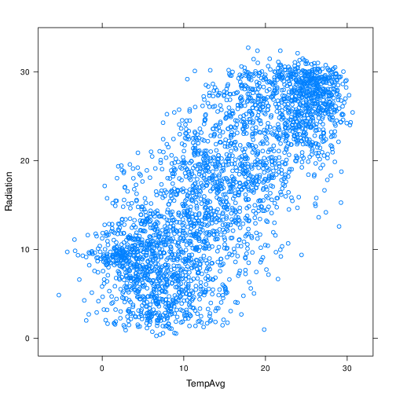
3.3. Añadimos rejilla
xyplot(Radiation ~ TempAvg, data=aranjuez,
grid = TRUE)
3.4.

3.5. Añadimos regresión lineal
xyplot(Radiation ~ TempAvg, data=aranjuez,
type=c('p', 'r'), grid = TRUE,
lwd=2, col.line='black')
ggplot(aranjuez, aes(TempAvg, Radiation)) +
geom_point() +
geom_smooth(method = "lm")
3.6.

3.7. Añadimos ajuste local
xyplot(Radiation ~ TempAvg, data=aranjuez,
type=c('p', 'smooth'), grid = TRUE,
lwd=2, col.line='black')
ggplot(aranjuez, aes(TempAvg, Radiation)) +
geom_point() +
geom_smooth()
3.8.
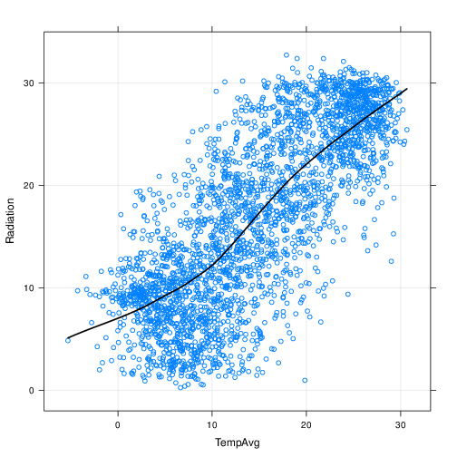
3.9. Paneles
xyplot(Radiation ~ TempAvg|factor(year),
data=aranjuez)
ggplot(aranjuez, aes(TempAvg, Radiation)) +
geom_point() +
facet_wrap(~factor(year))
3.10.

3.11. Grupos
xyplot(Radiation ~ TempAvg, groups=quarter,
data=aranjuez, auto.key=list(space='right'))
ggplot(aranjuez, aes(TempAvg, Radiation,
color = quarter)) +
geom_point()
3.12.
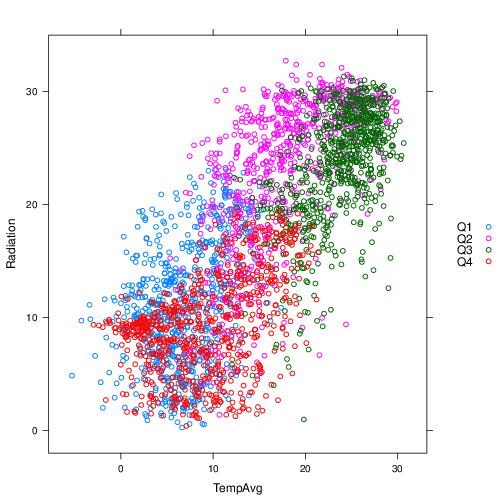
3.13. Paneles y grupos
xyplot(Radiation ~ TempAvg|factor(year),
groups=quarter,
data=aranjuez,
layout=c(4, 2),
auto.key=list(space='right'))
ggplot(aranjuez, aes(TempAvg, Radiation,
color = quarter)) +
geom_point() +
facet_wrap(~factor(year))
3.14.

3.15. Paneles y grupos
xyplot(Radiation ~ TempAvg|factor(year),
groups=quarter,
data=aranjuez,
layout=c(4, 2),
type=c('p', 'r'),
auto.key=list(space='right'))
3.16.

3.17. Colores y tamaños
xyplot(Radiation ~ TempAvg,
type=c('p', 'r'),
cex=2, col='blue',
alpha=.5, pch=19,
lwd=3, col.line='black',
data=aranjuez)
3.18.
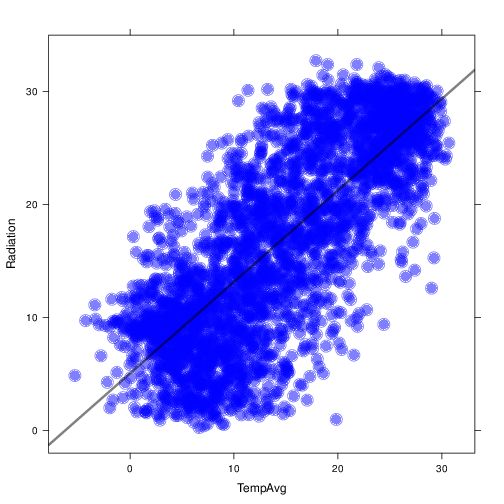
3.19. Colores con grupos
xyplot(Radiation ~ TempAvg,
group=quarter,
col=c('red', 'blue', 'green', 'yellow'),
pch=19,
auto.key=list(space='right'),
data=aranjuez)
3.20.
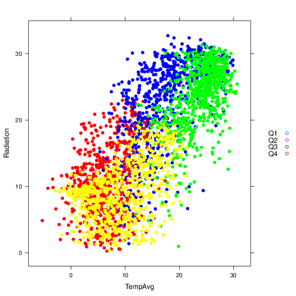
3.21. Colores con grupos: par.settings y simpleTheme
- Primero definimos el tema con
simpleTheme
myTheme <- simpleTheme(col=c('red', 'blue', 'green', 'yellow'), pch=19, alpha=.6)
3.22. Colores con grupos: par.settings y simpleTheme
- Aplicamos el resultado en
par.settings
xyplot(Radiation ~ TempAvg,
groups=quarter,
par.settings=myTheme,
auto.key=list(space='right'),
data=aranjuez)
3.23.
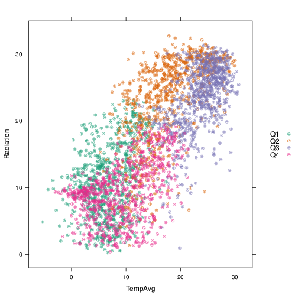
3.24. Colores: brewer.pal
library(RColorBrewer) myPal <- brewer.pal(n = 4, 'Dark2') myTheme <- simpleTheme(col = myPal, pch=19, alpha=.6)
- ColorBrewer: http://colorbrewer2.org/
3.25. Asignamos paleta con par.settings
xyplot(Radiation ~ TempAvg,
groups=quarter,
par.settings=myTheme,
auto.key=list(space='right'),
data=aranjuez)
3.26.
3.27. Matriz de gráficos de dispersión
splom(aranjuez[,c("TempAvg", "HumidAvg", "WindAvg", "Rain", "Radiation", "ET")], pscale=0, alpha=0.6, cex=0.3, pch=19)
library(GGally)
ggpairs(aranjuez)
3.28.

3.29. Matriz de gráficos de dispersión
splom(aranjuez[,c("TempAvg", "HumidAvg", "WindAvg", "Rain", "Radiation", "ET")], groups=aranjuez$quarter, auto.key=list(space='right'), pscale=0, alpha=0.6, cex=0.3, pch=19)
3.30.

3.31. Mapa de niveles
levelplot(TempAvg ~ year * day, data = aranjuez)
ggplot(aranjuez, aes(year, day)) +
geom_raster(aes(fill = TempAvg))
3.32.

3.33. levelplot con una paleta mejor
- Usamos
colorRampPalettepara generar una función que interpola colores a partir de una paleta
levelPal <- colorRampPalette( brewer.pal(n = 9, 'Oranges'))
- Comprobamos que es una función generadora de colores
levelPal(14)
- Usamos esta función con
col.regions
levelplot(TempAvg ~ year * day,
col.regions = levelPal,
data = aranjuez)
3.34.

3.35. Gráfico de contornos
contourplot(TempAvg ~ year * day,
data = aranjuez,
lwd = .5,
labels = list(cex = 0.6),
label.style = 'align',
cuts = 5)
3.36.
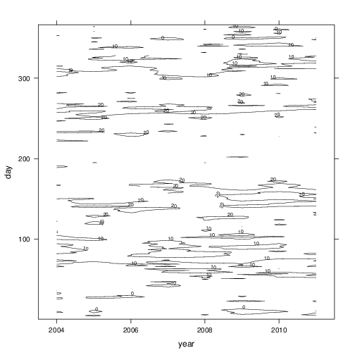
3.37. Box-and-Whiskers
bwplot(Radiation ~ month, data=aranjuez,
horizontal = FALSE, pch='|')
ggplot(aranjuez, aes(factor(month), Radiation)) +
geom_boxplot()
3.38.
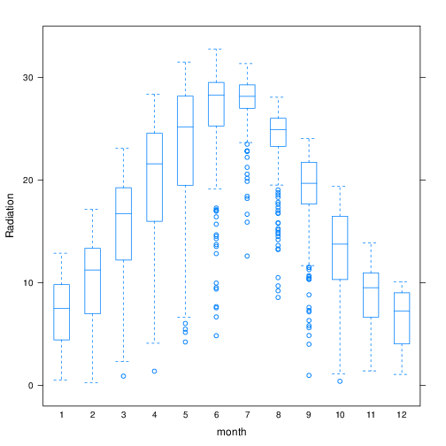
3.39. Box-and-Whiskers
bwplot(Radiation ~ month, data=aranjuez,
horizontal=FALSE,
panel=panel.violin)
ggplot(aranjuez, aes(factor(month), Radiation)) +
geom_violin()
3.40.
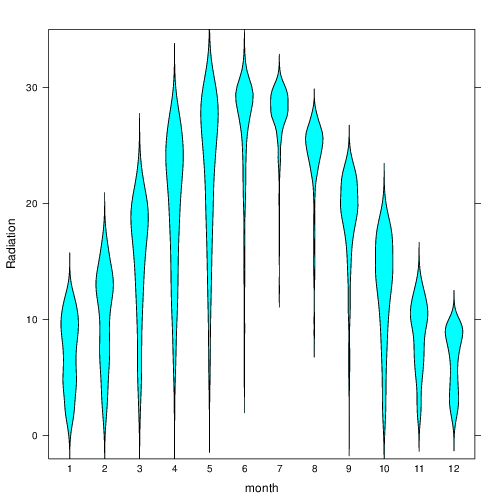
3.41. Histogramas
histogram(~ Radiation|factor(year), data=aranjuez)
ggplot(aranjuez, aes(Radiation)) +
geom_histogram() +
facet_wrap(~factor(year))
3.42.
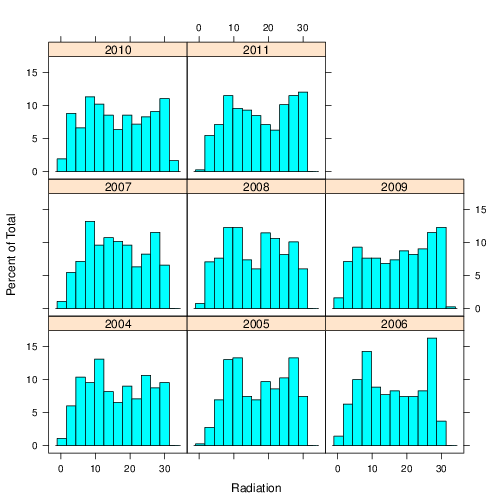
3.43. Gráficos de densidad
densityplot(~ Radiation, groups=quarter,
data=aranjuez,
auto.key=list(space='right'))
ggplot(aranjuez, aes(Radiation, color = quarter)) +
geom_density()
3.44.

3.45. Quantile-Quantile
firstHalf <- aranjuez$quarter %in% c('Q1', 'Q2') qq(firstHalf ~ Radiation, data=aranjuez)
3.46.
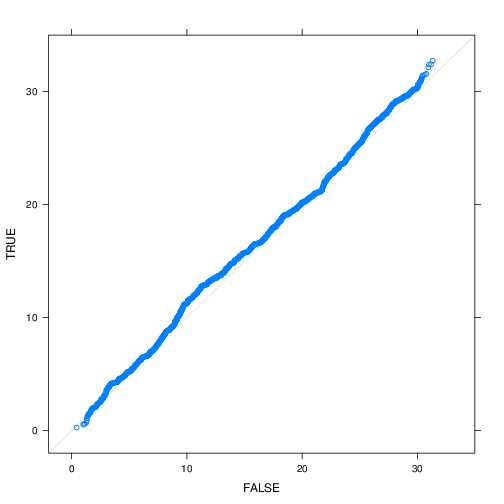
3.47. Quantile-quantile
winter <- aranjuez$quarter %in% c('Q1', 'Q4') qq(winter ~ Radiation, data=aranjuez)
3.48.
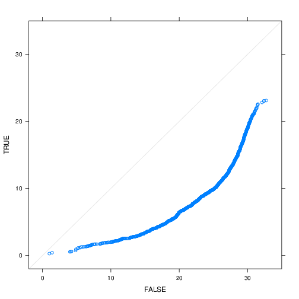
3.49. Quantile-Quantile
qqmath(~TempAvg, data=aranjuez,
groups=year, distribution=qnorm)
3.50.
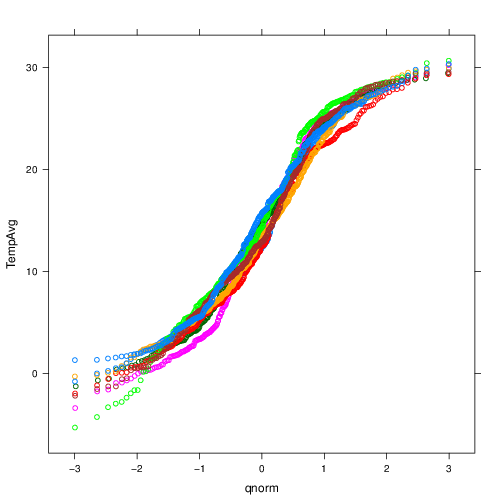